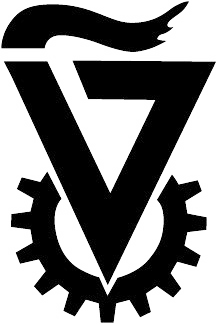

about me
My name is Noam Zilberstein. I am currently a student of Computer Science at the University of Pennsylvania.
education
University of Pennsylvania
School of Engineering & Applied Science
Master of Science in Engineering (MSE)
Computer and Information Science
Expected Graduation: May 2015
Relevant Coursework
- CIS 500: Software Foundations
- CIS 552: Advanced Programming
University of Pennsylvania
School of Engineering & Applied Science
Bachelor of Science in Engineering (BSE)
Computer and Information Science
Expected Graduation: May 2015
GPA: 3.91/4.0 cumulative
Awarded Dean's List: 2011-2012, 2012-2013
Relevant Coursework
- CIS 120: Programming Languages and Techniques
- CIS 121: Algorithms and Data Structures
- CIS 160: Mathmatical Foundations of Computer Science
- CIS 191: Linux and Unix Skills
- CIS 192: Python Programming
- CIS 240: Intro to Computer Architecture
- CIS 261: Discrete Probability, Stochastic Processes, and Statistical Inference
- CIS 262: Automata, Computability and Complexity
- CIS 330: Design Principals of Information Systems
- CIS 371: Computer Organization and Design
- CIS 380: Operating Systems
- CIS 500: Software Foundations
- CIS 552: Advanced Programming
work experience
Software Engineering Intern
Emotive, Inc
- Redesigned the Admin Console and created an automated template to assist others in the creation of Console Apps
- Investigated performance trade offs of various UI frameworks
- References Available
Teaching Assistant
University of Pennsylvania
- CIS 261: Discrete Probability, Stochastic Processes, and Statistical Inference (Fall 2013)
- CIS 120: Programming Languages and Techniques (Spring 2013)
- CIS 120: Programming Languages and Techniques (Fall 2012)

Research Intern
University of Massachusetts
- Developed an algorithm to accurately locate the position of a robot and guide it to target point integrating GPS data, optometry data, and stereo localization

Research Intern
The Technion: Israel Institute of Technology
- Developed a genetic algorithm to detect the locations of damage in a structure
projects
MusiQueue
Top 20 at PennApps
- Creates Spotify playlists based on the musical preferences of the people attending a Facebook event
- Awarded top 20 out of more than 200 teams
- Try it out!
Webmaster
University of Pennsylvania Cycling Team
- Built and maintained a standalone website for the Penn Cycling Team
Instaplan
Best Overall Project in Databases Course
- Suggests an itinerary of activities, restaurants, and hotels based on a users description of what they want to do.
- Voted best overall project in class
Simulated LC4 ISA
Computer Architecture Final Project
- Implemented the complete LC4 ISA in Verilog HDL with a 5 stage pipeline and 2-way associative instruction cache.